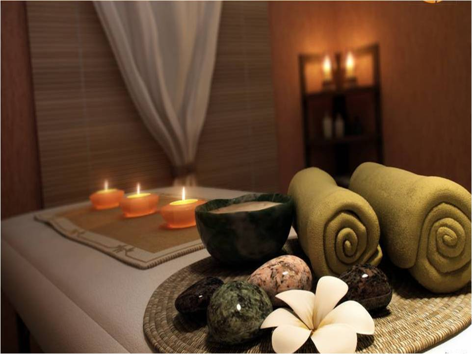

Bem-vindo ao ELVORA
Sistema inteligente de atendimento terapêutico focado em bem-estar, recuperação muscular e saúde mental. Escolha o serviço, responda a anamnese e selecione as partes do corpo que precisam de atenção para personalizar seu atendimento.
1. Escolha
Selecione o serviço ideal para você.
2. Anamnese
Responda sobre sua saúde.
3. Foco
Áreas que precisam de atenção.
4. Confirme
Envie os dados pelo WhatsApp.
Por que escolher o ELVORA?
Nossos Serviços
Além da estética, oferecemos performance, recuperação e bem-estar em alto nível.

Massagem Relaxante
Visa aliviar o estresse, promover o relaxamento muscular e melhorar o bem-estar geral...
Massagem Ventosa
Utiliza sucção para promover a circulação sanguínea, aliviar o estresse e melhorar o bem-estar. Ideal para alívio de tensões profundas e melhora do sono.

'Drenagem linfatica'
A drenagem linfática reduz o inchaço, promove uma agradável sensação de leveza e bem-estar e auxilia no funcionamento do sistema linfático. É especialmente recomendada no pós-operatório, ajudando a diminuir o edema, eliminar o excesso de líquidos e toxinas e favorecer uma recuperação mais segura e eficaz.
Massagem Miofacial
Concentra-se na liberação da tensão nos tecidos musculares e fasciais. Alivia a dor, melhora a mobilidade e a postura, promovendo bem-estar físico.

'Reflexologia Podal e Manual'
Técnica terapêutica que utiliza pressões em pontos específicos dos pés e das mãos, correspondentes a diferentes órgãos e sistemas do corpo. Promove relaxamento profundo, alívio do estresse e das tensões, melhora a circulação, auxilia no equilíbrio do organismo e proporciona uma intensa sensação de bem-estar. É uma excelente opção para quem busca relaxamento e qualidade de vida de forma natural.
'Massagem Facial'
Tratamento que promove relaxamento, revitalização e cuidados com a pele do rosto. Através de movimentos suaves e técnicas específicas, ajuda a aliviar tensões musculares, estimular a circulação sanguínea, melhorar a oxigenação dos tecidos e favorecer a produção natural de colágeno. Proporciona uma aparência mais saudável, iluminada e uma agradável sensação de bem-estar.

Massagem Pedras Quentes
Utiliza pedras aquecidas em pontos específicos. O calor proporciona relaxamento profundo, alívio de dores musculares e melhora a circulação de forma reconfortante.